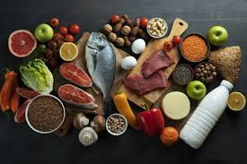

Estuidio sobre los habitos alimentarios en las comunidades autonomas de España
🔹Introduccion
Le agradecemos que dedique unos minutos a completar este formulario.
Su participación es anónima y voluntaria, y sus respuestas serán tratadas de manera confidencial.
Este estudio tiene como objetivo conocer los hábitos y costumbres alimentarias en las diferentes comunidades autonomas de España, con el fin de promover una alimentación más saludable.

1️⃣ Datos generales
◾Edad
-18
18-25
25-45
45-65
-65
◾Sexo
Masulino
Femenino
Otro
◾Comunidad autonoma
🍽️ SECCIÓN 2: Hábitos alimentarios
◾¿Cuántas comidas principales realiza al día?
1
2
3
Mas de 3
◾¿Con qué frecuencia consume frutas y verduras?
Varias veces al día
Una vez al día
Varias veces por semana
Rara vez
Nunca